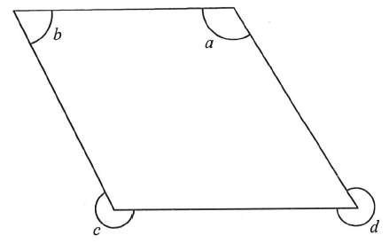

The figure shows a parallelogram $ABCD$ with $AB \parallel DC$ and $AD \parallel BC$. Angles $a$, $b$ are the marked interior angles at vertices $A$ and $B$, while $c$ and $d$ are the marked exterior angles at the vertices $C$ and $D$ (as marked in the figure).
Which of the following must be true?

Place $A$ top-right, $B$ top-left, $C$ bottom-left, $D$ bottom-right, so that $AB \parallel DC$ and $AD \parallel BC$. The angle at $A$ is $a$, at $B$ is $b$. At $C$ and $D$ the exterior angles (measured on the far side of the parallelogram) are $c$ and $d$.
Let the interior angles at $B$ and $C$ be $b$ and $\angle BCD$. Since an exterior angle and the adjacent interior angle at a point sum to $360^\circ$, we have $\angle BCD = 360^\circ - c$ and $\angle ADC = 360^\circ - d$.
Since $AD \parallel BC$, the co-interior angles on the transversal $AB$ are supplementary: $$\angle BAD + \angle ABC = 180^\circ.$$ $$\therefore a + b = 180^\circ.$$
✔ Statement I is TRUE.
$\angle BCD = 360^\circ - c$ is the interior angle at $C$. Using the parallel sides $AB \parallel DC$ with transversal $BC$: $$\angle ABC + \angle BCD = 180^\circ$$ $$b + (360^\circ - c) = 180^\circ$$ $$b - c = -180^\circ \quad\Longrightarrow\quad b + c = 2c - 180^\circ.$$ This equals $360^\circ$ only when $c = 270^\circ$, which does not hold for all parallelograms.
✘ Statement II is NOT always true.
$\angle ADC = 360^\circ - d$. Using $BC \parallel AD$ with transversal $DC$: $$\angle BCD + \angle ADC = 180^\circ$$ $$(360^\circ - c) + (360^\circ - d) = 180^\circ$$ $$720^\circ - (c+d) = 180^\circ \quad\Longrightarrow\quad c + d = 540^\circ.$$
✔ Statement III is TRUE.
Only statements I and III must be true.
Therefore the answer is: